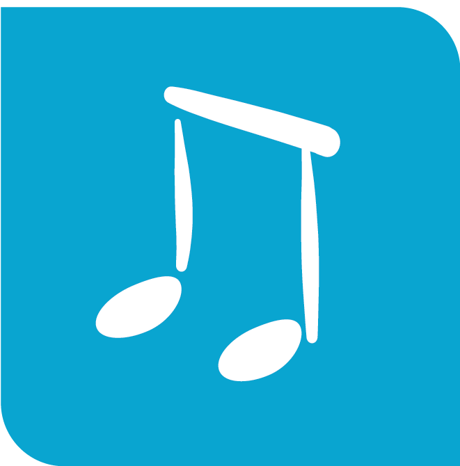
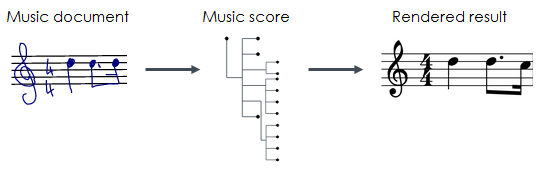
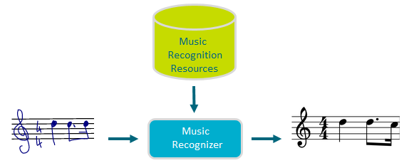

MyScript Music recognition engine analyzes the spatial relationship between the various parts of the music document.

The recognizer will send you a result in MusicXML or ScoreTREE strings.
The below example shows a text recognition request where the following are to be specified:
A clef is required for each recognition, as this is inherent to the recognition engine.
<script>
var result = document.getElementById("music-result");
var canvas = document.getElementById("music-canvas");
var context = canvas.getContext("2d");
var pointerId;
var url = 'http://cloud.myscript.com/api/v3.0/recognition/rest';
var applicationKey = 'xxxxxxxx-xxxx-xxxx-xxxx-xxxxxxxxxxxx';
var hmacKey = 'xxxxxxxx-xxxx-xxxx-xxxx-xxxxxxxxxxxx';
var stroker = new MyScript.Stroker();
var musicRenderer = new MyScript.MusicRenderer();
var musicRecognizer = new MyScript.MusicRecognizer(url);
var instanceId;
// Required staff and clef to allow music recognition
var staff = new MyScript.MusicStaff();
staff.setCount(5);
staff.setTop(100);
staff.setGap(20);
musicRecognizer.getParameters().setResultTypes(['MUSICXML']);
musicRecognizer.getParameters().setDivisions(480);
musicRecognizer.getParameters().setStaff(staff);
var clef = new MyScript.MusicClefInput();
clef.setSymbol('G');
clef.setOctave(0);
clef.setYAnchor(staff.getTop() + (staff.getGap() * (staff.getCount() - 2)));
var boundingBox = new MyScript.Rectangle();
boundingBox.setX(5);
boundingBox.setY(73);
boundingBox.setHeight((staff.getCount() + 2) * staff.getGap());
var clefInput = new MyScript.MusicClefInputComponent();
clefInput.setValue(clef);
clefInput.setBoundingBox(boundingBox);
var components = [clefInput];
musicRenderer.drawStaff(staff, context);
musicRenderer.drawComponents(components, context);
function doRecognition () {
musicRecognizer.doSimpleRecognition(applicationKey, instanceId, components.concat(stroker.getStrokes()), hmacKey).then(
function (data) {
if (!instanceId) {
instanceId = data.getInstanceId();
} else if (instanceId !== data.getInstanceId()) {
return;
}
var results = data.getMusicDocument().getResultElements();
for (var i in results) {
if (results[i] instanceof MyScript.MusicXMLResultElement) {
result.innerText = results[i].getValue();
}
}
}
)
}
function onPointerDown (event, x, y) {
musicRenderer.drawStart(event, x, y);
stroker.startStrokeWriting(x, y);
}
function onPointerMove (event, x, y) {
musicRenderer.drawContinue(event, x, y, context);
stroker.continueStrokeWriting(x, y);
}
function onPointerUp (event, x, y) {
musicRenderer.drawEnd(event, x, y, context);
stroker.endStrokeWriting(event);
if (!stroker.isEmpty()) {
doRecognition();
}
}
/**
* Firefox missing offsetX and offsetY properties hack
* @param event
* @returns {{x: number, y: number}}
*/
function getOffset (event) {
var element = event.target;
var offset = {x: 0, y: 0};
while (element.offsetParent) {
offset.x += element.offsetLeft;
offset.y += element.offsetTop;
element = element.offsetParent;
}
offset.x = event.pageX - offset.x;
offset.y = event.pageY - offset.y;
return offset;
}
function getX (event) {
if (event.offsetX) {
return event.offsetX;
}
return getOffset(event).x;
}
function getY (event) {
if (event.offsetY) {
return event.offsetY;
}
return getOffset(event).y;
}
canvas.addEventListener('mousedown', function (event) {
if (!pointerId) {
pointerId = event.pointerId;
onPointerDown(event, getX(event), getY(event));
}
}, false);
canvas.addEventListener('mousemove', function (event) {
if (pointerId === event.pointerId) {
onPointerMove(event, getX(event), getY(event));
}
}, false);
canvas.addEventListener('mouseup', function (event) {
if (pointerId === event.pointerId) {
onPointerUp(event, getX(event), getY(event));
pointerId = undefined;
}
}, false);
canvas.addEventListener('mouseleave', function (event) {
if (pointerId === event.pointerId) {
onPointerUp(event, getX(event), getY(event));
pointerId = undefined;
}
}, false);
</script>See the reference guide for information on the mandatory and optional parameters needed for music recognition.

MyScript Music requires two resource files:
Resources are to be attached to the recognizer, in order to tell it how to perform the segmentation of all the input ink parts.
While digital ink is captured in real time, it is simultaneously recognized in the background. The music recognizer will first analyze the spatial relationship between the parts of the score. It will then use a symbol classifier that calculates the probabilities for all the elements in the suggested segmentation. Finally it will output a result.